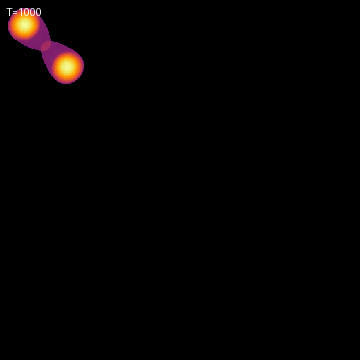

ogamespec/atom · issue #1 · 2D
2D: домены, сети
и существенная эволюция
В 2D те же правила: зародыш — одна клетка, биты p/n расходятся только по активным клеткам, без FFT и поля. Оказалось, что 2D эволюционирует гораздо лучше 3D: фронт и число клеток растут в разы, а фазовое разделение даёт доменную сеть.
N: 1 000 000T: 10 000L: 20 001лучший рост: P6 ×78674.00 (active)проверок: 6
01 Правило
Четыре направления (+x,−x,+y,−y). Веса: 1 + AP·(n_d−p_d)/N + RP·(p−p_d)/N + bias·b_d + noise·ξ; у n — свои AN/RN и независимый шум. Mobility — доля движущихся бит. Пустые клетки не обрабатываются.
front_ratio = front(10k)/front(5k); active_ratio = active(10k)/active(5k)
02 Результаты
| ID | front5 | front10 | fr | active5 | active10 | ar |
|---|---|---|---|---|---|---|
S00 | 278 | 518 | 1.86 | 35 844 | 65 597 | 1.83 |
S01 | 84 | 106 | 1.26 | 21 621 | 35 064 | 1.62 |
S02 | 78 | 98 | 1.26 | 18 892 | 29 719 | 1.57 |
S03 | 68 | 94 | 1.38 | 14 436 | 27 332 | 1.89 |
P1 | 72 | 98 | 1.36 | 15 767 | 29 162 | 1.85 |
P2 | 81 | 103 | 1.26 | 20 164 | 32 425 | 1.61 |
P3 | 81 | 102 | 1.27 | 20 129 | 32 357 | 1.61 |
P4 | 81 | 102 | 1.27 | 20 141 | 32 345 | 1.61 |
P5 | 80 | 100 | 1.26 | 19 563 | 31 095 | 1.59 |
P6 | 274 | 510 | 1.86 | 38 301 | 78 674 | 2.05 |


Что найдено. P6 даёт существенный рост: фронт ×3.4, активные клетки ×4.5. P1 даёт доменную сеть: p- и n-домены, границы которых образуют связную сеть (доля стенок ~0.31 после сглаживания). Это уже не «плато» 3D.
03 Проверки
| Проверка | Статус | Значение |
|---|---|---|
| 2D-правил прогнано | PASS | 10 |
| T=10 000 | PASS | 10000 |
| N=1 000 000 | PASS | 1000000 |
| существенная эволюция (front или active >1.25) | PASS | P6 fr=1.86 ar=78674.00 |
| доменная сеть P1 (стенки >0.2 после сглаживания) | PASS | 0.31 |
| GIF созданы | PASS | 2 |
04 Файлы
native/ca2d.c · scripts/run_sweep_2d.py · scripts/make_2d_gifs.py · results/ca2d_gif/
3D-часть: локальный CA, свип 21 правила.